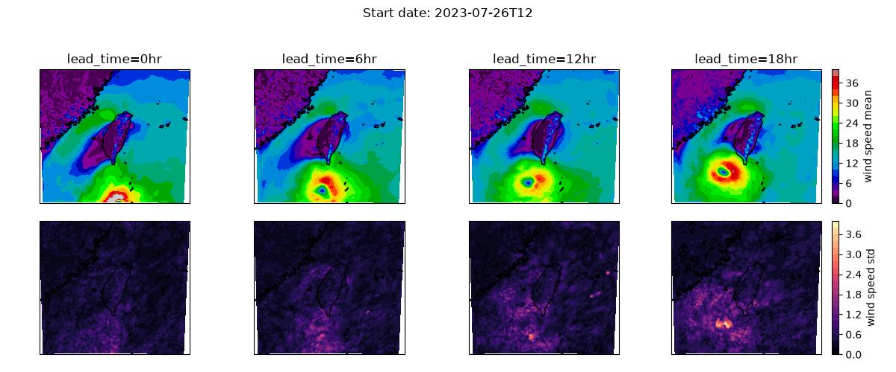

Ensemble Forecasting with Downscaling¶
Custom ensembling workflow with generative downscaling using CorrDiff.
This example demonstrates an ensemble forecasting pipeline that runs a prognostic model ensemble and applies CorrDiff generative downscaling to each step and member. While this example uses SFNO for the prognostic model, the pipeline is model-agnostic and can be reused with other prognostic models that follow the Earth2Studio interfaces.
In this example you will learn:
- How to create an ensemble forecast pipeline with CorrDiff downscaling
- Saving output ensemble data to a Zarr store
- Post-process results
Creating an Ensemble Downscaling Workflow¶
To create our own ensemble forecasting with downscaling workflow, we will use the
built-in ensemble workflow earth2studio.run.ensemble as the reference to
start with. For this to work we need to update how the output coordinates are
calculated for the IO object, as well as add the CorrDiff model's forward call
into the forecast loop.
As in previous examples, we use dependency injection to define the signature of the pipeline method.
import os
os.makedirs("outputs", exist_ok=True)
from dotenv import load_dotenv
load_dotenv() # TODO: make common example prep function
from datetime import datetime
from math import ceil
import numpy as np
import torch
from loguru import logger
from tqdm import tqdm
from earth2studio.data import DataSource, fetch_data
from earth2studio.io import IOBackend
from earth2studio.models.dx import CorrDiff
from earth2studio.models.px import PrognosticModel
from earth2studio.perturbation import Perturbation
from earth2studio.utils.coords import map_coords, split_coords
from earth2studio.utils.time import to_time_array
def corrdiff_on_hens_ensemble(
time: list[str] | list[datetime] | list[np.datetime64],
nsteps: int,
nensemble: int,
nsamples: int,
prognostic: PrognosticModel,
corrdiff: CorrDiff,
data: DataSource,
io: IOBackend,
perturbation: Perturbation,
batch_size: int | None = None,
) -> IOBackend:
"""Ensemble CorrDiff pipeline
Parameters
----------
time : list[str] | list[datetime] | list[np.datetime64]
Forecast start times
nsteps : int
Number of forecast steps for prognostic model to take
nensemble : int
Number of forecast ensemble members
nsamples : int
Number of samples from CorrDiff model to generate
prognostic : PrognosticModel
Prognostic model
corrdiff : CorrDiff
CorrDiff model
data : DataSource
Data source
io : IOBackend
IO Backend
perturbation : Perturbation
Perturbation method
batch_size : int | None, optional
Ensemble batch size during forecasting. If None, uses nensemble; default None
"""
device = torch.device("cuda" if torch.cuda.is_available() else "cpu")
prognostic = prognostic.to(device)
corrdiff = corrdiff.to(device)
corrdiff.number_of_samples = nsamples
# Fetch initial data for the ensemble
prognostic_ic = prognostic.input_coords()
time = to_time_array(time)
x0, coords0 = fetch_data(
source=data,
time=time,
variable=prognostic_ic["variable"],
lead_time=prognostic_ic["lead_time"],
device=device,
interp_to=prognostic_ic if hasattr(prognostic, "interp_method") else None,
interp_method=getattr(prognostic, "interp_method", "nearest"),
)
# Prepare CorrDiff output coordinates for IO backend
total_coords = corrdiff.output_coords(corrdiff.input_coords())
if "batch" in total_coords:
del total_coords["batch"]
total_coords["time"] = time
total_coords["lead_time"] = np.asarray(
[
prognostic.output_coords(prognostic.input_coords())["lead_time"] * i
for i in range(nsteps + 1)
]
).flatten()
total_coords["ensemble"] = np.arange(nensemble)
total_coords.move_to_end("lead_time", last=False)
total_coords.move_to_end("time", last=False)
total_coords.move_to_end("ensemble", last=False)
variables_to_save = total_coords.pop("variable")
io.add_array(total_coords, variables_to_save)
# Determine batch size and number of batches
batch_size = min(nensemble, batch_size or nensemble)
number_of_batches = ceil(nensemble / batch_size)
logger.info(
f"Starting {nensemble} member ensemble inference with {number_of_batches} batches."
)
# Main ensemble loop
for batch_id in tqdm(
range(0, nensemble, batch_size),
total=number_of_batches,
desc="Ensemble Batches",
):
mini_batch_size = min(batch_size, nensemble - batch_id)
x = x0.to(device)
# Set up coordinates for this batch
coords = {
"ensemble": np.arange(batch_id, batch_id + mini_batch_size),
**coords0.copy(),
}
# Repeat initial condition for each ensemble member in the batch
x = x.unsqueeze(0).repeat(mini_batch_size, *([1] * x.ndim))
x, coords = map_coords(x, coords, prognostic_ic)
x, coords = perturbation(x, coords)
model = prognostic.create_iterator(x, coords)
with tqdm(
total=nsteps + 1,
desc=f"Batch {batch_id} inference",
position=1,
leave=False,
) as pbar:
for step, (x, coords) in enumerate(model):
# Map prognostic outputs to CorrDiff inputs if needed
x, coords = map_coords(x, coords, corrdiff.input_coords())
# CorrDiff workflow: generate and write CorrDiff outputs
x, coords = corrdiff(x, coords)
io.write(*split_coords(x, coords))
pbar.update(1)
if step == nsteps:
break
logger.success("Inference complete")
return io
Console output2 lines
/__w/earth2studio/earth2studio/.venv/lib/python3.13/site-packages/torch/cuda/__init__.py:64: FutureWarning: The pynvml package is deprecated. Please install nvidia-ml-py instead. If you did not install pynvml directly, please report this to the maintainers of the package that installed pynvml for you.
import pynvml # type: ignore[import]Set Up¶
With the inference pipeline function defined, next let's create the required components as usual. We need the following:
- Prognostic Model: Use the built in SFNO model
earth2studio.models.px.SFNO. - CorrDiff Model: Use the built in CorrDiff Taiwan model
earth2studio.models.dx.CorrDiffTaiwan. - Datasource: Pull data from the GFS data api
earth2studio.data.GFS. - IO Backend: Let's save the outputs into a Zarr store
earth2studio.io.ZarrBackend.
For the prognostic checkpoint, we will use a HENS checkpoint conveniently stored on HuggingFace. Refer to the previous examples for more information about loading these models.
from earth2studio.data import GFS
from earth2studio.io import ZarrBackend
from earth2studio.models.auto import Package
from earth2studio.models.dx import CorrDiffTaiwan
from earth2studio.models.px import SFNO
from earth2studio.perturbation import (
CorrelatedSphericalGaussian,
HemisphericCentredBredVector,
)
# Create data source
data = GFS()
# Load prognostic model
hens_package = Package(
"hf://datasets/maheshankur10/hens/earth2mip_prod_registry/sfno_linear_74chq_sc2_layers8_edim620_wstgl2-epoch70_seed103",
cache_options={
"cache_storage": Package.default_cache("hens_1"),
"same_names": True,
},
)
model = SFNO.load_model(hens_package)
# Set up perturbation method
noise_amplification = torch.zeros(model.input_coords()["variable"].shape[0])
index_z500 = list(model.input_coords()["variable"]).index("z500")
noise_amplification[index_z500] = 39.27
noise_amplification = noise_amplification.reshape(1, 1, 1, -1, 1, 1)
seed_perturbation = CorrelatedSphericalGaussian(noise_amplitude=noise_amplification)
perturbation = HemisphericCentredBredVector(
model, data, seed_perturbation, noise_amplitude=noise_amplification
)
# Load the CorrDiffTaiwan model
corrdiff = CorrDiffTaiwan.load_model(CorrDiffTaiwan.load_default_package())
# Set up IO backend
io = ZarrBackend(
file_name="outputs/18_ensemble_corrdiff.zarr",
chunks={"ensemble": 1, "sample": 1, "time": 1, "lead_time": 1},
backend_kwargs={"overwrite": True},
)
Console output566 lines
Downloading config.json: 0%| | 0.00/22.4k [00:00<?, ?B/s]
Downloading config.json: 100%|██████████| 22.4k/22.4k [00:00<00:00, 134kB/s]
Downloading config.json: 100%|██████████| 22.4k/22.4k [00:00<00:00, 132kB/s]
Downloading global_means.npy: 0%| | 0.00/720 [00:00<?, ?B/s]
Downloading global_means.npy: 100%|██████████| 720/720 [00:00<00:00, 1.20kB/s]
Downloading global_means.npy: 100%|██████████| 720/720 [00:00<00:00, 1.20kB/s]
Downloading global_stds.npy: 0%| | 0.00/720 [00:00<?, ?B/s]
Downloading global_stds.npy: 100%|██████████| 720/720 [00:00<00:00, 1.83kB/s]
Downloading global_stds.npy: 100%|██████████| 720/720 [00:00<00:00, 1.81kB/s]
Downloading orography.nc: 0%| | 0.00/2.50M [00:00<?, ?B/s]
Downloading orography.nc: 100%|██████████| 2.50M/2.50M [00:00<00:00, 4.46MB/s]
Downloading orography.nc: 100%|██████████| 2.50M/2.50M [00:00<00:00, 4.41MB/s]
Downloading land_mask.nc: 0%| | 0.00/748k [00:00<?, ?B/s]
Downloading land_mask.nc: 100%|██████████| 748k/748k [00:00<00:00, 1.65MB/s]
Downloading land_mask.nc: 100%|██████████| 748k/748k [00:00<00:00, 1.64MB/s]
Downloading best_ckpt_mp0.tar: 0%| | 0.00/8.31G [00:00<?, ?B/s]
Downloading best_ckpt_mp0.tar: 0%| | 10.0M/8.31G [00:01<21:57, 6.77MB/s]
Downloading best_ckpt_mp0.tar: 0%| | 30.0M/8.31G [00:01<06:34, 22.5MB/s]
Downloading best_ckpt_mp0.tar: 0%| | 40.0M/8.31G [00:01<04:49, 30.7MB/s]
Downloading best_ckpt_mp0.tar: 1%| | 60.0M/8.31G [00:01<02:59, 49.4MB/s]
Downloading best_ckpt_mp0.tar: 1%| | 70.0M/8.31G [00:02<02:53, 51.0MB/s]
Downloading best_ckpt_mp0.tar: 1%| | 90.0M/8.31G [00:02<02:09, 68.2MB/s]
Downloading best_ckpt_mp0.tar: 1%|▏ | 110M/8.31G [00:02<01:49, 80.4MB/s]
Downloading best_ckpt_mp0.tar: 2%|▏ | 130M/8.31G [00:02<01:46, 82.8MB/s]
Downloading best_ckpt_mp0.tar: 2%|▏ | 150M/8.31G [00:02<01:41, 86.2MB/s]
Downloading best_ckpt_mp0.tar: 2%|▏ | 170M/8.31G [00:03<01:37, 89.5MB/s]
Downloading best_ckpt_mp0.tar: 2%|▏ | 190M/8.31G [00:03<01:41, 85.9MB/s]
Downloading best_ckpt_mp0.tar: 2%|▏ | 200M/8.31G [00:03<01:57, 74.4MB/s]
Downloading best_ckpt_mp0.tar: 2%|▏ | 210M/8.31G [00:03<02:09, 67.2MB/s]
Downloading best_ckpt_mp0.tar: 3%|▎ | 230M/8.31G [00:04<02:23, 60.6MB/s]
Downloading best_ckpt_mp0.tar: 3%|▎ | 250M/8.31G [00:04<02:09, 66.9MB/s]
Downloading best_ckpt_mp0.tar: 3%|▎ | 260M/8.31G [00:04<02:23, 60.4MB/s]
Downloading best_ckpt_mp0.tar: 3%|▎ | 280M/8.31G [00:05<02:12, 65.0MB/s]
Downloading best_ckpt_mp0.tar: 4%|▎ | 300M/8.31G [00:05<01:52, 76.6MB/s]
Downloading best_ckpt_mp0.tar: 4%|▍ | 320M/8.31G [00:05<02:25, 59.0MB/s]
Downloading best_ckpt_mp0.tar: 4%|▍ | 330M/8.31G [00:05<02:14, 63.6MB/s]
Downloading best_ckpt_mp0.tar: 4%|▍ | 340M/8.31G [00:06<02:52, 49.6MB/s]
Downloading best_ckpt_mp0.tar: 4%|▍ | 360M/8.31G [00:06<02:28, 57.6MB/s]
Downloading best_ckpt_mp0.tar: 4%|▍ | 380M/8.31G [00:06<01:59, 71.2MB/s]
Downloading best_ckpt_mp0.tar: 5%|▍ | 390M/8.31G [00:06<01:57, 72.3MB/s]
Downloading best_ckpt_mp0.tar: 5%|▍ | 410M/8.31G [00:07<01:52, 75.5MB/s]
Downloading best_ckpt_mp0.tar: 5%|▍ | 420M/8.31G [00:07<01:55, 73.6MB/s]
Downloading best_ckpt_mp0.tar: 5%|▌ | 440M/8.31G [00:07<01:35, 88.3MB/s]
Downloading best_ckpt_mp0.tar: 5%|▌ | 450M/8.31G [00:07<01:37, 87.1MB/s]
Downloading best_ckpt_mp0.tar: 6%|▌ | 470M/8.31G [00:07<01:27, 96.4MB/s]
Downloading best_ckpt_mp0.tar: 6%|▌ | 490M/8.31G [00:07<01:32, 91.1MB/s]
Downloading best_ckpt_mp0.tar: 6%|▌ | 510M/8.31G [00:08<01:31, 91.4MB/s]
Downloading best_ckpt_mp0.tar: 6%|▌ | 520M/8.31G [00:08<02:06, 66.5MB/s]
Downloading best_ckpt_mp0.tar: 6%|▌ | 530M/8.31G [00:08<01:57, 71.0MB/s]
Downloading best_ckpt_mp0.tar: 6%|▋ | 540M/8.31G [00:08<01:52, 74.0MB/s]
Downloading best_ckpt_mp0.tar: 6%|▋ | 550M/8.31G [00:09<02:29, 55.7MB/s]
Downloading best_ckpt_mp0.tar: 7%|▋ | 570M/8.31G [00:09<01:58, 70.3MB/s]
Downloading best_ckpt_mp0.tar: 7%|▋ | 580M/8.31G [00:09<02:14, 62.0MB/s]
Downloading best_ckpt_mp0.tar: 7%|▋ | 600M/8.31G [00:09<01:50, 75.1MB/s]
Downloading best_ckpt_mp0.tar: 7%|▋ | 620M/8.31G [00:09<01:39, 82.9MB/s]
Downloading best_ckpt_mp0.tar: 8%|▊ | 640M/8.31G [00:10<01:32, 88.8MB/s]
Downloading best_ckpt_mp0.tar: 8%|▊ | 660M/8.31G [00:10<01:30, 90.8MB/s]
Downloading best_ckpt_mp0.tar: 8%|▊ | 680M/8.31G [00:10<01:31, 89.5MB/s]
Downloading best_ckpt_mp0.tar: 8%|▊ | 700M/8.31G [00:10<01:21, 100MB/s]
Downloading best_ckpt_mp0.tar: 8%|▊ | 710M/8.31G [00:10<01:37, 83.6MB/s]
Downloading best_ckpt_mp0.tar: 9%|▊ | 730M/8.31G [00:11<01:47, 76.2MB/s]
Downloading best_ckpt_mp0.tar: 9%|▊ | 740M/8.31G [00:11<02:04, 65.2MB/s]
Downloading best_ckpt_mp0.tar: 9%|▉ | 760M/8.31G [00:11<01:43, 78.2MB/s]
Downloading best_ckpt_mp0.tar: 9%|▉ | 770M/8.31G [00:11<01:44, 77.9MB/s]
Downloading best_ckpt_mp0.tar: 9%|▉ | 790M/8.31G [00:12<01:47, 75.6MB/s]
Downloading best_ckpt_mp0.tar: 10%|▉ | 810M/8.31G [00:12<02:11, 61.2MB/s]
Downloading best_ckpt_mp0.tar: 10%|▉ | 830M/8.31G [00:12<01:57, 68.8MB/s]
Downloading best_ckpt_mp0.tar: 10%|▉ | 840M/8.31G [00:13<01:58, 67.7MB/s]
Downloading best_ckpt_mp0.tar: 10%|█ | 860M/8.31G [00:13<01:39, 80.4MB/s]
Downloading best_ckpt_mp0.tar: 10%|█ | 870M/8.31G [00:13<01:35, 83.6MB/s]
Downloading best_ckpt_mp0.tar: 10%|█ | 890M/8.31G [00:13<01:30, 87.9MB/s]
Downloading best_ckpt_mp0.tar: 11%|█ | 900M/8.31G [00:13<01:36, 83.0MB/s]
Downloading best_ckpt_mp0.tar: 11%|█ | 920M/8.31G [00:13<01:41, 78.0MB/s]
Downloading best_ckpt_mp0.tar: 11%|█ | 940M/8.31G [00:14<01:27, 91.2MB/s]
Downloading best_ckpt_mp0.tar: 11%|█ | 950M/8.31G [00:14<01:36, 82.3MB/s]
Downloading best_ckpt_mp0.tar: 11%|█▏ | 960M/8.31G [00:14<01:53, 70.0MB/s]
Downloading best_ckpt_mp0.tar: 11%|█▏ | 970M/8.31G [00:14<01:46, 74.4MB/s]
Downloading best_ckpt_mp0.tar: 12%|█▏ | 980M/8.31G [00:14<01:58, 66.5MB/s]
Downloading best_ckpt_mp0.tar: 12%|█▏ | 0.98G/8.31G [00:15<01:45, 75.0MB/s]
Downloading best_ckpt_mp0.tar: 12%|█▏ | 1.00G/8.31G [00:15<01:40, 78.1MB/s]
Downloading best_ckpt_mp0.tar: 12%|█▏ | 1.01G/8.31G [00:15<02:28, 52.7MB/s]
Downloading best_ckpt_mp0.tar: 12%|█▏ | 1.02G/8.31G [00:15<02:14, 58.4MB/s]
Downloading best_ckpt_mp0.tar: 12%|█▏ | 1.03G/8.31G [00:16<02:51, 45.7MB/s]
Downloading best_ckpt_mp0.tar: 12%|█▏ | 1.04G/8.31G [00:16<02:28, 52.4MB/s]
Downloading best_ckpt_mp0.tar: 13%|█▎ | 1.05G/8.31G [00:16<02:36, 49.8MB/s]
Downloading best_ckpt_mp0.tar: 13%|█▎ | 1.06G/8.31G [00:17<02:44, 47.4MB/s]
Downloading best_ckpt_mp0.tar: 13%|█▎ | 1.07G/8.31G [00:17<02:50, 45.5MB/s]
Downloading best_ckpt_mp0.tar: 13%|█▎ | 1.08G/8.31G [00:17<03:00, 42.9MB/s]
Downloading best_ckpt_mp0.tar: 13%|█▎ | 1.09G/8.31G [00:17<02:36, 49.5MB/s]
Downloading best_ckpt_mp0.tar: 13%|█▎ | 1.10G/8.31G [00:18<02:54, 44.3MB/s]
Downloading best_ckpt_mp0.tar: 13%|█▎ | 1.11G/8.31G [00:18<02:41, 47.7MB/s]
Downloading best_ckpt_mp0.tar: 14%|█▎ | 1.12G/8.31G [00:18<03:03, 42.0MB/s]
Downloading best_ckpt_mp0.tar: 14%|█▎ | 1.13G/8.31G [00:18<03:07, 41.0MB/s]
Downloading best_ckpt_mp0.tar: 14%|█▍ | 1.14G/8.31G [00:18<02:37, 48.9MB/s]
Downloading best_ckpt_mp0.tar: 14%|█▍ | 1.16G/8.31G [00:19<02:09, 59.1MB/s]
Downloading best_ckpt_mp0.tar: 14%|█▍ | 1.18G/8.31G [00:19<01:47, 71.0MB/s]
Downloading best_ckpt_mp0.tar: 14%|█▍ | 1.19G/8.31G [00:19<01:56, 65.8MB/s]
Downloading best_ckpt_mp0.tar: 15%|█▍ | 1.21G/8.31G [00:19<01:37, 78.1MB/s]
Downloading best_ckpt_mp0.tar: 15%|█▍ | 1.22G/8.31G [00:19<01:36, 79.1MB/s]
Downloading best_ckpt_mp0.tar: 15%|█▍ | 1.23G/8.31G [00:20<01:44, 72.8MB/s]
Downloading best_ckpt_mp0.tar: 15%|█▍ | 1.24G/8.31G [00:20<01:36, 78.6MB/s]
Downloading best_ckpt_mp0.tar: 15%|█▌ | 1.25G/8.31G [00:20<01:53, 66.9MB/s]
Downloading best_ckpt_mp0.tar: 15%|█▌ | 1.27G/8.31G [00:20<01:46, 71.2MB/s]
Downloading best_ckpt_mp0.tar: 16%|█▌ | 1.29G/8.31G [00:21<01:57, 64.3MB/s]
Downloading best_ckpt_mp0.tar: 16%|█▌ | 1.31G/8.31G [00:21<01:42, 73.5MB/s]
Downloading best_ckpt_mp0.tar: 16%|█▌ | 1.32G/8.31G [00:21<01:49, 68.4MB/s]
Downloading best_ckpt_mp0.tar: 16%|█▌ | 1.34G/8.31G [00:21<01:39, 75.3MB/s]
Downloading best_ckpt_mp0.tar: 16%|█▌ | 1.35G/8.31G [00:21<01:42, 73.3MB/s]
Downloading best_ckpt_mp0.tar: 16%|█▋ | 1.37G/8.31G [00:22<01:25, 86.8MB/s]
Downloading best_ckpt_mp0.tar: 17%|█▋ | 1.38G/8.31G [00:22<01:34, 78.5MB/s]
Downloading best_ckpt_mp0.tar: 17%|█▋ | 1.40G/8.31G [00:22<01:26, 86.1MB/s]
Downloading best_ckpt_mp0.tar: 17%|█▋ | 1.42G/8.31G [00:22<01:15, 97.9MB/s]
Downloading best_ckpt_mp0.tar: 17%|█▋ | 1.44G/8.31G [00:22<01:08, 108MB/s]
Downloading best_ckpt_mp0.tar: 18%|█▊ | 1.46G/8.31G [00:22<01:14, 98.4MB/s]
Downloading best_ckpt_mp0.tar: 18%|█▊ | 1.47G/8.31G [00:23<01:18, 93.6MB/s]
Downloading best_ckpt_mp0.tar: 18%|█▊ | 1.49G/8.31G [00:23<01:21, 89.7MB/s]
Downloading best_ckpt_mp0.tar: 18%|█▊ | 1.50G/8.31G [00:23<01:40, 72.9MB/s]
Downloading best_ckpt_mp0.tar: 18%|█▊ | 1.52G/8.31G [00:24<02:31, 48.0MB/s]
Downloading best_ckpt_mp0.tar: 19%|█▊ | 1.54G/8.31G [00:24<01:59, 60.8MB/s]
Downloading best_ckpt_mp0.tar: 19%|█▉ | 1.56G/8.31G [00:24<01:36, 74.9MB/s]
Downloading best_ckpt_mp0.tar: 19%|█▉ | 1.58G/8.31G [00:24<01:23, 86.2MB/s]
Downloading best_ckpt_mp0.tar: 19%|█▉ | 1.60G/8.31G [00:25<01:17, 92.8MB/s]
Downloading best_ckpt_mp0.tar: 20%|█▉ | 1.62G/8.31G [00:25<01:10, 102MB/s]
Downloading best_ckpt_mp0.tar: 20%|█▉ | 1.64G/8.31G [00:25<01:18, 90.7MB/s]
Downloading best_ckpt_mp0.tar: 20%|█▉ | 1.65G/8.31G [00:25<01:56, 61.1MB/s]
Downloading best_ckpt_mp0.tar: 20%|█▉ | 1.66G/8.31G [00:26<01:57, 60.6MB/s]
Downloading best_ckpt_mp0.tar: 20%|██ | 1.68G/8.31G [00:26<01:51, 64.1MB/s]
Downloading best_ckpt_mp0.tar: 20%|██ | 1.69G/8.31G [00:26<01:46, 67.0MB/s]
Downloading best_ckpt_mp0.tar: 20%|██ | 1.70G/8.31G [00:26<01:38, 72.2MB/s]
Downloading best_ckpt_mp0.tar: 21%|██ | 1.71G/8.31G [00:26<01:49, 64.6MB/s]
Downloading best_ckpt_mp0.tar: 21%|██ | 1.73G/8.31G [00:27<01:38, 71.8MB/s]
Downloading best_ckpt_mp0.tar: 21%|██ | 1.75G/8.31G [00:27<01:21, 86.7MB/s]
Downloading best_ckpt_mp0.tar: 21%|██ | 1.76G/8.31G [00:27<01:40, 70.1MB/s]
Downloading best_ckpt_mp0.tar: 21%|██▏ | 1.77G/8.31G [00:27<02:04, 56.6MB/s]
Downloading best_ckpt_mp0.tar: 22%|██▏ | 1.79G/8.31G [00:28<02:02, 57.3MB/s]
Downloading best_ckpt_mp0.tar: 22%|██▏ | 1.80G/8.31G [00:28<01:53, 61.6MB/s]
Downloading best_ckpt_mp0.tar: 22%|██▏ | 1.81G/8.31G [00:28<02:19, 49.9MB/s]
Downloading best_ckpt_mp0.tar: 22%|██▏ | 1.82G/8.31G [00:28<02:24, 48.3MB/s]
Downloading best_ckpt_mp0.tar: 22%|██▏ | 1.84G/8.31G [00:29<01:44, 66.3MB/s]
Downloading best_ckpt_mp0.tar: 22%|██▏ | 1.85G/8.31G [00:29<01:50, 62.7MB/s]
Downloading best_ckpt_mp0.tar: 22%|██▏ | 1.87G/8.31G [00:29<01:34, 73.6MB/s]
Downloading best_ckpt_mp0.tar: 23%|██▎ | 1.88G/8.31G [00:29<01:44, 66.4MB/s]
Downloading best_ckpt_mp0.tar: 23%|██▎ | 1.88G/8.31G [00:30<02:13, 51.5MB/s]
Downloading best_ckpt_mp0.tar: 23%|██▎ | 1.89G/8.31G [00:30<02:09, 53.0MB/s]
Downloading best_ckpt_mp0.tar: 23%|██▎ | 1.91G/8.31G [00:30<02:14, 50.9MB/s]
Downloading best_ckpt_mp0.tar: 23%|██▎ | 1.93G/8.31G [00:30<01:55, 59.5MB/s]
Downloading best_ckpt_mp0.tar: 23%|██▎ | 1.94G/8.31G [00:31<02:01, 56.2MB/s]
Downloading best_ckpt_mp0.tar: 24%|██▎ | 1.96G/8.31G [00:31<01:36, 70.5MB/s]
Downloading best_ckpt_mp0.tar: 24%|██▍ | 1.98G/8.31G [00:31<01:21, 82.9MB/s]
Downloading best_ckpt_mp0.tar: 24%|██▍ | 1.99G/8.31G [00:31<01:33, 72.4MB/s]
Downloading best_ckpt_mp0.tar: 24%|██▍ | 2.00G/8.31G [00:31<01:33, 72.2MB/s]
Downloading best_ckpt_mp0.tar: 24%|██▍ | 2.02G/8.31G [00:32<01:32, 73.1MB/s]
Downloading best_ckpt_mp0.tar: 25%|██▍ | 2.04G/8.31G [00:32<01:17, 86.9MB/s]
Downloading best_ckpt_mp0.tar: 25%|██▍ | 2.06G/8.31G [00:32<01:08, 97.8MB/s]
Downloading best_ckpt_mp0.tar: 25%|██▍ | 2.07G/8.31G [00:32<01:16, 87.3MB/s]
Downloading best_ckpt_mp0.tar: 25%|██▌ | 2.08G/8.31G [00:32<01:45, 63.3MB/s]
Downloading best_ckpt_mp0.tar: 25%|██▌ | 2.09G/8.31G [00:33<02:12, 50.5MB/s]
Downloading best_ckpt_mp0.tar: 25%|██▌ | 2.11G/8.31G [00:33<01:40, 66.3MB/s]
Downloading best_ckpt_mp0.tar: 26%|██▌ | 2.12G/8.31G [00:33<01:38, 67.7MB/s]
Downloading best_ckpt_mp0.tar: 26%|██▌ | 2.13G/8.31G [00:33<01:56, 57.1MB/s]
Downloading best_ckpt_mp0.tar: 26%|██▌ | 2.15G/8.31G [00:34<01:30, 72.7MB/s]
Downloading best_ckpt_mp0.tar: 26%|██▌ | 2.17G/8.31G [00:34<01:23, 78.5MB/s]
Downloading best_ckpt_mp0.tar: 26%|██▌ | 2.18G/8.31G [00:34<01:32, 71.4MB/s]
Downloading best_ckpt_mp0.tar: 26%|██▋ | 2.19G/8.31G [00:34<01:56, 56.5MB/s]
Downloading best_ckpt_mp0.tar: 26%|██▋ | 2.20G/8.31G [00:35<01:58, 55.5MB/s]
Downloading best_ckpt_mp0.tar: 27%|██▋ | 2.21G/8.31G [00:35<02:08, 51.1MB/s]
Downloading best_ckpt_mp0.tar: 27%|██▋ | 2.23G/8.31G [00:35<01:53, 57.7MB/s]
Downloading best_ckpt_mp0.tar: 27%|██▋ | 2.24G/8.31G [00:35<01:45, 61.7MB/s]
Downloading best_ckpt_mp0.tar: 27%|██▋ | 2.25G/8.31G [00:36<02:06, 51.5MB/s]
Downloading best_ckpt_mp0.tar: 27%|██▋ | 2.26G/8.31G [00:36<02:00, 53.9MB/s]
Downloading best_ckpt_mp0.tar: 27%|██▋ | 2.27G/8.31G [00:36<01:56, 55.8MB/s]
Downloading best_ckpt_mp0.tar: 28%|██▊ | 2.29G/8.31G [00:36<01:42, 62.9MB/s]
Downloading best_ckpt_mp0.tar: 28%|██▊ | 2.30G/8.31G [00:36<01:21, 78.9MB/s]
Downloading best_ckpt_mp0.tar: 28%|██▊ | 2.31G/8.31G [00:37<01:37, 65.7MB/s]
Downloading best_ckpt_mp0.tar: 28%|██▊ | 2.32G/8.31G [00:37<01:32, 69.2MB/s]
Downloading best_ckpt_mp0.tar: 28%|██▊ | 2.33G/8.31G [00:37<01:38, 65.4MB/s]
Downloading best_ckpt_mp0.tar: 28%|██▊ | 2.34G/8.31G [00:37<01:36, 66.5MB/s]
Downloading best_ckpt_mp0.tar: 28%|██▊ | 2.35G/8.31G [00:37<02:02, 52.2MB/s]
Downloading best_ckpt_mp0.tar: 28%|██▊ | 2.36G/8.31G [00:37<01:48, 58.7MB/s]
Downloading best_ckpt_mp0.tar: 29%|██▊ | 2.37G/8.31G [00:38<01:39, 64.1MB/s]
Downloading best_ckpt_mp0.tar: 29%|██▊ | 2.38G/8.31G [00:38<01:44, 60.7MB/s]
Downloading best_ckpt_mp0.tar: 29%|██▉ | 2.39G/8.31G [00:38<02:09, 49.0MB/s]
Downloading best_ckpt_mp0.tar: 29%|██▉ | 2.41G/8.31G [00:38<01:33, 67.6MB/s]
Downloading best_ckpt_mp0.tar: 29%|██▉ | 2.43G/8.31G [00:38<01:15, 83.7MB/s]
Downloading best_ckpt_mp0.tar: 29%|██▉ | 2.44G/8.31G [00:39<01:17, 81.4MB/s]
Downloading best_ckpt_mp0.tar: 30%|██▉ | 2.46G/8.31G [00:39<01:23, 75.3MB/s]
Downloading best_ckpt_mp0.tar: 30%|██▉ | 2.47G/8.31G [00:39<01:23, 74.7MB/s]
Downloading best_ckpt_mp0.tar: 30%|██▉ | 2.49G/8.31G [00:39<01:15, 83.2MB/s]
Downloading best_ckpt_mp0.tar: 30%|███ | 2.50G/8.31G [00:39<01:18, 79.3MB/s]
Downloading best_ckpt_mp0.tar: 30%|███ | 2.52G/8.31G [00:40<01:11, 87.2MB/s]
Downloading best_ckpt_mp0.tar: 31%|███ | 2.54G/8.31G [00:40<01:05, 95.0MB/s]
Downloading best_ckpt_mp0.tar: 31%|███ | 2.56G/8.31G [00:40<01:02, 98.7MB/s]
Downloading best_ckpt_mp0.tar: 31%|███ | 2.57G/8.31G [00:40<01:10, 86.9MB/s]
Downloading best_ckpt_mp0.tar: 31%|███ | 2.58G/8.31G [00:40<01:09, 88.0MB/s]
Downloading best_ckpt_mp0.tar: 31%|███▏ | 2.60G/8.31G [00:40<01:03, 97.2MB/s]
Downloading best_ckpt_mp0.tar: 31%|███▏ | 2.62G/8.31G [00:41<00:57, 106MB/s]
Downloading best_ckpt_mp0.tar: 32%|███▏ | 2.64G/8.31G [00:41<01:02, 98.1MB/s]
Downloading best_ckpt_mp0.tar: 32%|███▏ | 2.65G/8.31G [00:41<01:02, 97.9MB/s]
Downloading best_ckpt_mp0.tar: 32%|███▏ | 2.67G/8.31G [00:41<00:59, 103MB/s]
Downloading best_ckpt_mp0.tar: 32%|███▏ | 2.69G/8.31G [00:41<00:59, 101MB/s]
Downloading best_ckpt_mp0.tar: 33%|███▎ | 2.71G/8.31G [00:42<00:59, 101MB/s]
Downloading best_ckpt_mp0.tar: 33%|███▎ | 2.72G/8.31G [00:42<01:09, 86.0MB/s]
Downloading best_ckpt_mp0.tar: 33%|███▎ | 2.74G/8.31G [00:42<01:14, 80.7MB/s]
Downloading best_ckpt_mp0.tar: 33%|███▎ | 2.75G/8.31G [00:42<01:13, 81.3MB/s]
Downloading best_ckpt_mp0.tar: 33%|███▎ | 2.76G/8.31G [00:42<01:10, 85.0MB/s]
Downloading best_ckpt_mp0.tar: 33%|███▎ | 2.77G/8.31G [00:43<02:04, 47.8MB/s]
Downloading best_ckpt_mp0.tar: 33%|███▎ | 2.78G/8.31G [00:43<02:03, 48.2MB/s]
Downloading best_ckpt_mp0.tar: 34%|███▎ | 2.79G/8.31G [00:43<01:46, 55.6MB/s]
Downloading best_ckpt_mp0.tar: 34%|███▍ | 2.81G/8.31G [00:44<01:32, 63.5MB/s]
Downloading best_ckpt_mp0.tar: 34%|███▍ | 2.83G/8.31G [00:44<01:20, 73.3MB/s]
Downloading best_ckpt_mp0.tar: 34%|███▍ | 2.85G/8.31G [00:44<01:14, 79.1MB/s]
Downloading best_ckpt_mp0.tar: 35%|███▍ | 2.87G/8.31G [00:45<01:39, 58.8MB/s]
Downloading best_ckpt_mp0.tar: 35%|███▍ | 2.88G/8.31G [00:45<01:39, 58.7MB/s]
Downloading best_ckpt_mp0.tar: 35%|███▍ | 2.90G/8.31G [00:45<01:21, 71.3MB/s]
Downloading best_ckpt_mp0.tar: 35%|███▌ | 2.91G/8.31G [00:45<01:17, 75.2MB/s]
Downloading best_ckpt_mp0.tar: 35%|███▌ | 2.92G/8.31G [00:45<01:18, 74.2MB/s]
Downloading best_ckpt_mp0.tar: 35%|███▌ | 2.93G/8.31G [00:45<01:18, 73.4MB/s]
Downloading best_ckpt_mp0.tar: 35%|███▌ | 2.94G/8.31G [00:45<01:25, 67.8MB/s]
Downloading best_ckpt_mp0.tar: 36%|███▌ | 2.96G/8.31G [00:46<01:14, 77.4MB/s]
Downloading best_ckpt_mp0.tar: 36%|███▌ | 2.97G/8.31G [00:46<01:10, 81.6MB/s]
Downloading best_ckpt_mp0.tar: 36%|███▌ | 2.98G/8.31G [00:46<01:15, 75.8MB/s]
Downloading best_ckpt_mp0.tar: 36%|███▌ | 2.99G/8.31G [00:46<01:15, 75.9MB/s]
Downloading best_ckpt_mp0.tar: 36%|███▌ | 3.00G/8.31G [00:46<01:21, 70.0MB/s]
Downloading best_ckpt_mp0.tar: 36%|███▋ | 3.02G/8.31G [00:47<01:32, 61.3MB/s]
Downloading best_ckpt_mp0.tar: 37%|███▋ | 3.04G/8.31G [00:47<01:26, 65.1MB/s]
Downloading best_ckpt_mp0.tar: 37%|███▋ | 3.06G/8.31G [00:47<01:17, 73.2MB/s]
Downloading best_ckpt_mp0.tar: 37%|███▋ | 3.07G/8.31G [00:47<01:26, 64.8MB/s]
Downloading best_ckpt_mp0.tar: 37%|███▋ | 3.09G/8.31G [00:48<01:34, 59.1MB/s]
Downloading best_ckpt_mp0.tar: 37%|███▋ | 3.10G/8.31G [00:48<01:34, 59.3MB/s]
Downloading best_ckpt_mp0.tar: 37%|███▋ | 3.12G/8.31G [00:48<01:25, 65.1MB/s]
Downloading best_ckpt_mp0.tar: 38%|███▊ | 3.12G/8.31G [00:48<01:25, 65.1MB/s]
Downloading best_ckpt_mp0.tar: 38%|███▊ | 3.14G/8.31G [00:49<01:10, 79.2MB/s]
Downloading best_ckpt_mp0.tar: 38%|███▊ | 3.16G/8.31G [00:49<01:05, 84.7MB/s]
Downloading best_ckpt_mp0.tar: 38%|███▊ | 3.18G/8.31G [00:49<01:03, 86.6MB/s]
Downloading best_ckpt_mp0.tar: 38%|███▊ | 3.19G/8.31G [00:49<01:11, 76.8MB/s]
Downloading best_ckpt_mp0.tar: 39%|███▊ | 3.20G/8.31G [00:50<01:25, 64.1MB/s]
Downloading best_ckpt_mp0.tar: 39%|███▉ | 3.22G/8.31G [00:50<01:19, 68.3MB/s]
Downloading best_ckpt_mp0.tar: 39%|███▉ | 3.24G/8.31G [00:50<01:15, 71.8MB/s]
Downloading best_ckpt_mp0.tar: 39%|███▉ | 3.25G/8.31G [00:50<01:16, 70.8MB/s]
Downloading best_ckpt_mp0.tar: 39%|███▉ | 3.27G/8.31G [00:50<01:10, 77.1MB/s]
Downloading best_ckpt_mp0.tar: 40%|███▉ | 3.29G/8.31G [00:51<01:06, 81.5MB/s]
Downloading best_ckpt_mp0.tar: 40%|███▉ | 3.31G/8.31G [00:51<01:07, 80.0MB/s]
Downloading best_ckpt_mp0.tar: 40%|████ | 3.33G/8.31G [00:51<01:02, 85.4MB/s]
Downloading best_ckpt_mp0.tar: 40%|████ | 3.35G/8.31G [00:51<00:55, 95.7MB/s]
Downloading best_ckpt_mp0.tar: 41%|████ | 3.37G/8.31G [00:51<00:51, 103MB/s]
Downloading best_ckpt_mp0.tar: 41%|████ | 3.39G/8.31G [00:52<00:55, 95.2MB/s]
Downloading best_ckpt_mp0.tar: 41%|████ | 3.40G/8.31G [00:52<01:08, 76.8MB/s]
Downloading best_ckpt_mp0.tar: 41%|████ | 3.42G/8.31G [00:52<00:59, 88.3MB/s]
Downloading best_ckpt_mp0.tar: 41%|████▏ | 3.44G/8.31G [00:52<00:55, 93.6MB/s]
Downloading best_ckpt_mp0.tar: 41%|████▏ | 3.45G/8.31G [00:52<00:56, 92.6MB/s]
Downloading best_ckpt_mp0.tar: 42%|████▏ | 3.47G/8.31G [00:53<00:52, 99.1MB/s]
Downloading best_ckpt_mp0.tar: 42%|████▏ | 3.49G/8.31G [00:53<00:48, 107MB/s]
Downloading best_ckpt_mp0.tar: 42%|████▏ | 3.51G/8.31G [00:53<01:03, 80.9MB/s]
Downloading best_ckpt_mp0.tar: 42%|████▏ | 3.52G/8.31G [00:53<01:15, 68.0MB/s]
Downloading best_ckpt_mp0.tar: 42%|████▏ | 3.53G/8.31G [00:54<01:22, 61.9MB/s]
Downloading best_ckpt_mp0.tar: 43%|████▎ | 3.54G/8.31G [00:54<01:32, 55.5MB/s]
Downloading best_ckpt_mp0.tar: 43%|████▎ | 3.55G/8.31G [00:54<01:11, 71.5MB/s]
Downloading best_ckpt_mp0.tar: 43%|████▎ | 3.56G/8.31G [00:54<01:13, 69.7MB/s]
Downloading best_ckpt_mp0.tar: 43%|████▎ | 3.58G/8.31G [00:55<01:08, 74.0MB/s]
Downloading best_ckpt_mp0.tar: 43%|████▎ | 3.60G/8.31G [00:55<01:09, 72.6MB/s]
Downloading best_ckpt_mp0.tar: 44%|████▎ | 3.62G/8.31G [00:55<01:10, 70.9MB/s]
Downloading best_ckpt_mp0.tar: 44%|████▍ | 3.64G/8.31G [00:55<01:01, 81.2MB/s]
Downloading best_ckpt_mp0.tar: 44%|████▍ | 3.66G/8.31G [00:56<00:58, 85.2MB/s]
Downloading best_ckpt_mp0.tar: 44%|████▍ | 3.68G/8.31G [00:56<00:52, 95.1MB/s]
Downloading best_ckpt_mp0.tar: 44%|████▍ | 3.69G/8.31G [00:56<00:57, 86.2MB/s]
Downloading best_ckpt_mp0.tar: 45%|████▍ | 3.71G/8.31G [00:56<00:54, 90.8MB/s]
Downloading best_ckpt_mp0.tar: 45%|████▍ | 3.72G/8.31G [00:56<00:57, 85.1MB/s]
Downloading best_ckpt_mp0.tar: 45%|████▌ | 3.74G/8.31G [00:56<00:54, 90.6MB/s]
Downloading best_ckpt_mp0.tar: 45%|████▌ | 3.75G/8.31G [00:57<01:00, 81.0MB/s]
Downloading best_ckpt_mp0.tar: 45%|████▌ | 3.77G/8.31G [00:57<00:56, 86.0MB/s]
Downloading best_ckpt_mp0.tar: 46%|████▌ | 3.79G/8.31G [00:57<00:56, 85.8MB/s]
Downloading best_ckpt_mp0.tar: 46%|████▌ | 3.81G/8.31G [00:57<00:58, 81.9MB/s]
Downloading best_ckpt_mp0.tar: 46%|████▌ | 3.82G/8.31G [00:58<01:04, 75.3MB/s]
Downloading best_ckpt_mp0.tar: 46%|████▌ | 3.84G/8.31G [00:58<00:54, 88.6MB/s]
Downloading best_ckpt_mp0.tar: 46%|████▋ | 3.85G/8.31G [00:58<00:57, 83.5MB/s]
Downloading best_ckpt_mp0.tar: 47%|████▋ | 3.87G/8.31G [00:58<00:49, 96.1MB/s]
Downloading best_ckpt_mp0.tar: 47%|████▋ | 3.88G/8.31G [00:58<00:52, 91.4MB/s]
Downloading best_ckpt_mp0.tar: 47%|████▋ | 3.90G/8.31G [00:58<00:51, 92.2MB/s]
Downloading best_ckpt_mp0.tar: 47%|████▋ | 3.92G/8.31G [00:59<00:53, 87.6MB/s]
Downloading best_ckpt_mp0.tar: 47%|████▋ | 3.93G/8.31G [00:59<01:37, 48.4MB/s]
Downloading best_ckpt_mp0.tar: 47%|████▋ | 3.94G/8.31G [00:59<01:34, 49.7MB/s]
Downloading best_ckpt_mp0.tar: 48%|████▊ | 3.96G/8.31G [01:00<01:14, 63.1MB/s]
Downloading best_ckpt_mp0.tar: 48%|████▊ | 3.97G/8.31G [01:00<01:03, 73.1MB/s]
Downloading best_ckpt_mp0.tar: 48%|████▊ | 3.99G/8.31G [01:00<00:53, 85.8MB/s]
Downloading best_ckpt_mp0.tar: 48%|████▊ | 4.01G/8.31G [01:00<00:47, 96.4MB/s]
Downloading best_ckpt_mp0.tar: 49%|████▊ | 4.03G/8.31G [01:00<00:54, 83.6MB/s]
Downloading best_ckpt_mp0.tar: 49%|████▉ | 4.05G/8.31G [01:01<00:49, 92.4MB/s]
Downloading best_ckpt_mp0.tar: 49%|████▉ | 4.06G/8.31G [01:01<00:59, 77.1MB/s]
Downloading best_ckpt_mp0.tar: 49%|████▉ | 4.08G/8.31G [01:01<00:56, 79.7MB/s]
Downloading best_ckpt_mp0.tar: 49%|████▉ | 4.09G/8.31G [01:01<00:59, 76.4MB/s]
Downloading best_ckpt_mp0.tar: 49%|████▉ | 4.10G/8.31G [01:02<01:09, 65.5MB/s]
Downloading best_ckpt_mp0.tar: 50%|████▉ | 4.12G/8.31G [01:02<01:05, 68.3MB/s]
Downloading best_ckpt_mp0.tar: 50%|████▉ | 4.13G/8.31G [01:02<01:07, 66.4MB/s]
Downloading best_ckpt_mp0.tar: 50%|████▉ | 4.14G/8.31G [01:02<01:04, 69.2MB/s]
Downloading best_ckpt_mp0.tar: 50%|█████ | 4.16G/8.31G [01:02<00:53, 84.0MB/s]
Downloading best_ckpt_mp0.tar: 50%|█████ | 4.18G/8.31G [01:03<00:52, 85.2MB/s]
Downloading best_ckpt_mp0.tar: 50%|█████ | 4.19G/8.31G [01:03<00:57, 76.7MB/s]
Downloading best_ckpt_mp0.tar: 51%|█████ | 4.21G/8.31G [01:03<00:49, 88.8MB/s]
Downloading best_ckpt_mp0.tar: 51%|█████ | 4.23G/8.31G [01:03<00:46, 95.2MB/s]
Downloading best_ckpt_mp0.tar: 51%|█████ | 4.24G/8.31G [01:03<00:45, 95.1MB/s]
Downloading best_ckpt_mp0.tar: 51%|█████ | 4.25G/8.31G [01:03<00:49, 87.6MB/s]
Downloading best_ckpt_mp0.tar: 51%|█████ | 4.26G/8.31G [01:03<00:50, 86.7MB/s]
Downloading best_ckpt_mp0.tar: 51%|█████▏ | 4.27G/8.31G [01:04<01:07, 64.6MB/s]
Downloading best_ckpt_mp0.tar: 52%|█████▏ | 4.29G/8.31G [01:04<00:52, 81.9MB/s]
Downloading best_ckpt_mp0.tar: 52%|█████▏ | 4.31G/8.31G [01:04<00:46, 91.9MB/s]
Downloading best_ckpt_mp0.tar: 52%|█████▏ | 4.32G/8.31G [01:04<00:52, 82.1MB/s]
Downloading best_ckpt_mp0.tar: 52%|█████▏ | 4.34G/8.31G [01:04<00:46, 91.5MB/s]
Downloading best_ckpt_mp0.tar: 52%|█████▏ | 4.36G/8.31G [01:05<00:44, 96.4MB/s]
Downloading best_ckpt_mp0.tar: 53%|█████▎ | 4.37G/8.31G [01:05<00:45, 92.1MB/s]
Downloading best_ckpt_mp0.tar: 53%|█████▎ | 4.38G/8.31G [01:05<00:48, 87.8MB/s]
Downloading best_ckpt_mp0.tar: 53%|█████▎ | 4.39G/8.31G [01:05<00:44, 93.9MB/s]
Downloading best_ckpt_mp0.tar: 53%|█████▎ | 4.41G/8.31G [01:05<00:46, 89.2MB/s]
Downloading best_ckpt_mp0.tar: 53%|█████▎ | 4.42G/8.31G [01:06<00:53, 77.5MB/s]
Downloading best_ckpt_mp0.tar: 53%|█████▎ | 4.43G/8.31G [01:06<01:14, 55.9MB/s]
Downloading best_ckpt_mp0.tar: 53%|█████▎ | 4.44G/8.31G [01:06<01:21, 51.1MB/s]
Downloading best_ckpt_mp0.tar: 54%|█████▎ | 4.45G/8.31G [01:06<01:20, 51.7MB/s]
Downloading best_ckpt_mp0.tar: 54%|█████▍ | 4.47G/8.31G [01:07<01:11, 57.4MB/s]
Downloading best_ckpt_mp0.tar: 54%|█████▍ | 4.48G/8.31G [01:07<01:08, 60.1MB/s]
Downloading best_ckpt_mp0.tar: 54%|█████▍ | 4.49G/8.31G [01:07<01:09, 58.8MB/s]
Downloading best_ckpt_mp0.tar: 54%|█████▍ | 4.50G/8.31G [01:07<01:09, 58.4MB/s]
Downloading best_ckpt_mp0.tar: 54%|█████▍ | 4.52G/8.31G [01:08<01:12, 55.8MB/s]
Downloading best_ckpt_mp0.tar: 55%|█████▍ | 4.54G/8.31G [01:08<01:05, 62.0MB/s]
Downloading best_ckpt_mp0.tar: 55%|█████▍ | 4.56G/8.31G [01:08<01:01, 65.8MB/s]
Downloading best_ckpt_mp0.tar: 55%|█████▌ | 4.58G/8.31G [01:08<00:50, 78.5MB/s]
Downloading best_ckpt_mp0.tar: 55%|█████▌ | 4.60G/8.31G [01:09<00:45, 88.1MB/s]
Downloading best_ckpt_mp0.tar: 56%|█████▌ | 4.62G/8.31G [01:09<00:40, 98.4MB/s]
Downloading best_ckpt_mp0.tar: 56%|█████▌ | 4.64G/8.31G [01:09<00:44, 89.5MB/s]
Downloading best_ckpt_mp0.tar: 56%|█████▌ | 4.65G/8.31G [01:09<00:44, 87.6MB/s]
Downloading best_ckpt_mp0.tar: 56%|█████▌ | 4.66G/8.31G [01:09<00:48, 80.7MB/s]
Downloading best_ckpt_mp0.tar: 56%|█████▋ | 4.68G/8.31G [01:09<00:41, 93.8MB/s]
Downloading best_ckpt_mp0.tar: 56%|█████▋ | 4.69G/8.31G [01:10<00:46, 83.3MB/s]
Downloading best_ckpt_mp0.tar: 57%|█████▋ | 4.71G/8.31G [01:10<00:43, 89.7MB/s]
Downloading best_ckpt_mp0.tar: 57%|█████▋ | 4.73G/8.31G [01:10<00:49, 77.2MB/s]
Downloading best_ckpt_mp0.tar: 57%|█████▋ | 4.74G/8.31G [01:10<00:48, 79.3MB/s]
Downloading best_ckpt_mp0.tar: 57%|█████▋ | 4.76G/8.31G [01:11<00:46, 81.5MB/s]
Downloading best_ckpt_mp0.tar: 57%|█████▋ | 4.77G/8.31G [01:11<00:46, 82.6MB/s]
Downloading best_ckpt_mp0.tar: 58%|█████▊ | 4.79G/8.31G [01:11<00:41, 90.2MB/s]
Downloading best_ckpt_mp0.tar: 58%|█████▊ | 4.80G/8.31G [01:11<00:37, 101MB/s]
Downloading best_ckpt_mp0.tar: 58%|█████▊ | 4.81G/8.31G [01:11<00:38, 96.4MB/s]
Downloading best_ckpt_mp0.tar: 58%|█████▊ | 4.83G/8.31G [01:11<00:40, 91.7MB/s]
Downloading best_ckpt_mp0.tar: 58%|█████▊ | 4.84G/8.31G [01:12<00:43, 86.0MB/s]
Downloading best_ckpt_mp0.tar: 59%|█████▊ | 4.86G/8.31G [01:12<00:39, 93.7MB/s]
Downloading best_ckpt_mp0.tar: 59%|█████▊ | 4.87G/8.31G [01:12<00:43, 85.1MB/s]
Downloading best_ckpt_mp0.tar: 59%|█████▉ | 4.89G/8.31G [01:12<00:40, 91.0MB/s]
Downloading best_ckpt_mp0.tar: 59%|█████▉ | 4.91G/8.31G [01:13<00:50, 72.9MB/s]
Downloading best_ckpt_mp0.tar: 59%|█████▉ | 4.93G/8.31G [01:13<00:45, 79.1MB/s]
Downloading best_ckpt_mp0.tar: 59%|█████▉ | 4.94G/8.31G [01:13<00:52, 69.2MB/s]
Downloading best_ckpt_mp0.tar: 60%|█████▉ | 4.95G/8.31G [01:13<00:50, 71.0MB/s]
Downloading best_ckpt_mp0.tar: 60%|█████▉ | 4.97G/8.31G [01:13<00:48, 74.2MB/s]
Downloading best_ckpt_mp0.tar: 60%|██████ | 4.99G/8.31G [01:14<00:43, 82.2MB/s]
Downloading best_ckpt_mp0.tar: 60%|██████ | 5.00G/8.31G [01:14<00:46, 76.2MB/s]
Downloading best_ckpt_mp0.tar: 60%|██████ | 5.02G/8.31G [01:14<00:43, 81.7MB/s]
Downloading best_ckpt_mp0.tar: 61%|██████ | 5.04G/8.31G [01:14<00:42, 81.9MB/s]
Downloading best_ckpt_mp0.tar: 61%|██████ | 5.06G/8.31G [01:14<00:42, 82.8MB/s]
Downloading best_ckpt_mp0.tar: 61%|██████ | 5.07G/8.31G [01:15<00:44, 77.4MB/s]
Downloading best_ckpt_mp0.tar: 61%|██████ | 5.08G/8.31G [01:15<00:45, 75.5MB/s]
Downloading best_ckpt_mp0.tar: 61%|██████▏ | 5.10G/8.31G [01:15<00:40, 84.3MB/s]
Downloading best_ckpt_mp0.tar: 62%|██████▏ | 5.12G/8.31G [01:15<00:36, 93.6MB/s]
Downloading best_ckpt_mp0.tar: 62%|██████▏ | 5.13G/8.31G [01:15<00:43, 79.2MB/s]
Downloading best_ckpt_mp0.tar: 62%|██████▏ | 5.15G/8.31G [01:16<00:38, 88.6MB/s]
Downloading best_ckpt_mp0.tar: 62%|██████▏ | 5.16G/8.31G [01:16<00:44, 76.5MB/s]
Downloading best_ckpt_mp0.tar: 62%|██████▏ | 5.18G/8.31G [01:16<00:46, 72.4MB/s]
Downloading best_ckpt_mp0.tar: 62%|██████▏ | 5.19G/8.31G [01:16<00:47, 70.2MB/s]
Downloading best_ckpt_mp0.tar: 63%|██████▎ | 5.21G/8.31G [01:16<00:41, 80.8MB/s]
Downloading best_ckpt_mp0.tar: 63%|██████▎ | 5.22G/8.31G [01:17<00:38, 86.0MB/s]
Downloading best_ckpt_mp0.tar: 63%|██████▎ | 5.24G/8.31G [01:17<00:34, 96.0MB/s]
Downloading best_ckpt_mp0.tar: 63%|██████▎ | 5.25G/8.31G [01:17<00:36, 89.3MB/s]
Downloading best_ckpt_mp0.tar: 63%|██████▎ | 5.26G/8.31G [01:17<00:42, 76.1MB/s]
Downloading best_ckpt_mp0.tar: 63%|██████▎ | 5.27G/8.31G [01:17<00:40, 81.0MB/s]
Downloading best_ckpt_mp0.tar: 64%|██████▎ | 5.28G/8.31G [01:17<00:41, 78.9MB/s]
Downloading best_ckpt_mp0.tar: 64%|██████▍ | 5.30G/8.31G [01:18<00:36, 87.8MB/s]
Downloading best_ckpt_mp0.tar: 64%|██████▍ | 5.31G/8.31G [01:18<00:40, 78.7MB/s]
Downloading best_ckpt_mp0.tar: 64%|██████▍ | 5.33G/8.31G [01:18<00:35, 90.5MB/s]
Downloading best_ckpt_mp0.tar: 64%|██████▍ | 5.35G/8.31G [01:18<00:32, 97.7MB/s]
Downloading best_ckpt_mp0.tar: 65%|██████▍ | 5.36G/8.31G [01:18<00:33, 95.5MB/s]
Downloading best_ckpt_mp0.tar: 65%|██████▍ | 5.37G/8.31G [01:18<00:36, 87.2MB/s]
Downloading best_ckpt_mp0.tar: 65%|██████▍ | 5.39G/8.31G [01:19<00:43, 71.6MB/s]
Downloading best_ckpt_mp0.tar: 65%|██████▌ | 5.41G/8.31G [01:19<00:36, 85.0MB/s]
Downloading best_ckpt_mp0.tar: 65%|██████▌ | 5.43G/8.31G [01:19<00:32, 95.9MB/s]
Downloading best_ckpt_mp0.tar: 66%|██████▌ | 5.45G/8.31G [01:19<00:29, 106MB/s]
Downloading best_ckpt_mp0.tar: 66%|██████▌ | 5.47G/8.31G [01:20<00:30, 99.5MB/s]
Downloading best_ckpt_mp0.tar: 66%|██████▌ | 5.49G/8.31G [01:20<00:28, 106MB/s]
Downloading best_ckpt_mp0.tar: 66%|██████▋ | 5.51G/8.31G [01:20<00:30, 100MB/s]
Downloading best_ckpt_mp0.tar: 66%|██████▋ | 5.52G/8.31G [01:20<00:37, 79.6MB/s]
Downloading best_ckpt_mp0.tar: 67%|██████▋ | 5.54G/8.31G [01:21<00:40, 74.0MB/s]
Downloading best_ckpt_mp0.tar: 67%|██████▋ | 5.56G/8.31G [01:21<00:38, 77.0MB/s]
Downloading best_ckpt_mp0.tar: 67%|██████▋ | 5.57G/8.31G [01:21<00:42, 68.9MB/s]
Downloading best_ckpt_mp0.tar: 67%|██████▋ | 5.58G/8.31G [01:21<00:46, 63.3MB/s]
Downloading best_ckpt_mp0.tar: 67%|██████▋ | 5.59G/8.31G [01:21<00:42, 69.2MB/s]
Downloading best_ckpt_mp0.tar: 67%|██████▋ | 5.61G/8.31G [01:22<00:34, 84.1MB/s]
Downloading best_ckpt_mp0.tar: 68%|██████▊ | 5.62G/8.31G [01:22<00:34, 83.7MB/s]
Downloading best_ckpt_mp0.tar: 68%|██████▊ | 5.62G/8.31G [01:22<00:37, 76.8MB/s]
Downloading best_ckpt_mp0.tar: 68%|██████▊ | 5.64G/8.31G [01:22<00:32, 87.7MB/s]
Downloading best_ckpt_mp0.tar: 68%|██████▊ | 5.66G/8.31G [01:22<00:41, 69.1MB/s]
Downloading best_ckpt_mp0.tar: 68%|██████▊ | 5.68G/8.31G [01:23<00:44, 64.0MB/s]
Downloading best_ckpt_mp0.tar: 69%|██████▊ | 5.69G/8.31G [01:23<00:41, 68.3MB/s]
Downloading best_ckpt_mp0.tar: 69%|██████▊ | 5.70G/8.31G [01:23<00:41, 67.7MB/s]
Downloading best_ckpt_mp0.tar: 69%|██████▉ | 5.71G/8.31G [01:23<00:44, 62.2MB/s]
Downloading best_ckpt_mp0.tar: 69%|██████▉ | 5.72G/8.31G [01:23<00:47, 57.9MB/s]
Downloading best_ckpt_mp0.tar: 69%|██████▉ | 5.74G/8.31G [01:24<00:43, 62.8MB/s]
Downloading best_ckpt_mp0.tar: 69%|██████▉ | 5.75G/8.31G [01:24<00:53, 51.5MB/s]
Downloading best_ckpt_mp0.tar: 69%|██████▉ | 5.77G/8.31G [01:24<00:45, 60.5MB/s]
Downloading best_ckpt_mp0.tar: 70%|██████▉ | 5.78G/8.31G [01:25<00:45, 59.9MB/s]
Downloading best_ckpt_mp0.tar: 70%|██████▉ | 5.79G/8.31G [01:25<00:42, 63.3MB/s]
Downloading best_ckpt_mp0.tar: 70%|██████▉ | 5.81G/8.31G [01:25<00:39, 67.5MB/s]
Downloading best_ckpt_mp0.tar: 70%|███████ | 5.83G/8.31G [01:25<00:38, 68.6MB/s]
Downloading best_ckpt_mp0.tar: 70%|███████ | 5.85G/8.31G [01:25<00:33, 77.9MB/s]
Downloading best_ckpt_mp0.tar: 71%|███████ | 5.87G/8.31G [01:26<00:30, 84.7MB/s]
Downloading best_ckpt_mp0.tar: 71%|███████ | 5.88G/8.31G [01:26<00:36, 71.2MB/s]
Downloading best_ckpt_mp0.tar: 71%|███████ | 5.89G/8.31G [01:26<00:38, 68.1MB/s]
Downloading best_ckpt_mp0.tar: 71%|███████ | 5.91G/8.31G [01:26<00:33, 75.8MB/s]
Downloading best_ckpt_mp0.tar: 71%|███████ | 5.92G/8.31G [01:26<00:35, 71.5MB/s]
Downloading best_ckpt_mp0.tar: 71%|███████▏ | 5.94G/8.31G [01:27<00:35, 70.8MB/s]
Downloading best_ckpt_mp0.tar: 72%|███████▏ | 5.96G/8.31G [01:27<00:32, 77.2MB/s]
Downloading best_ckpt_mp0.tar: 72%|███████▏ | 5.98G/8.31G [01:27<00:31, 79.2MB/s]
Downloading best_ckpt_mp0.tar: 72%|███████▏ | 6.00G/8.31G [01:28<00:32, 76.9MB/s]
Downloading best_ckpt_mp0.tar: 72%|███████▏ | 6.01G/8.31G [01:28<00:30, 80.3MB/s]
Downloading best_ckpt_mp0.tar: 73%|███████▎ | 6.03G/8.31G [01:28<00:26, 94.0MB/s]
Downloading best_ckpt_mp0.tar: 73%|███████▎ | 6.04G/8.31G [01:28<00:23, 105MB/s]
Downloading best_ckpt_mp0.tar: 73%|███████▎ | 6.06G/8.31G [01:28<00:25, 95.8MB/s]
Downloading best_ckpt_mp0.tar: 73%|███████▎ | 6.08G/8.31G [01:28<00:23, 102MB/s]
Downloading best_ckpt_mp0.tar: 73%|███████▎ | 6.10G/8.31G [01:29<00:24, 97.1MB/s]
Downloading best_ckpt_mp0.tar: 74%|███████▎ | 6.12G/8.31G [01:29<00:25, 91.3MB/s]
Downloading best_ckpt_mp0.tar: 74%|███████▍ | 6.14G/8.31G [01:29<00:23, 97.9MB/s]
Downloading best_ckpt_mp0.tar: 74%|███████▍ | 6.16G/8.31G [01:29<00:22, 101MB/s]
Downloading best_ckpt_mp0.tar: 74%|███████▍ | 6.18G/8.31G [01:29<00:21, 108MB/s]
Downloading best_ckpt_mp0.tar: 75%|███████▍ | 6.20G/8.31G [01:30<00:25, 87.3MB/s]
Downloading best_ckpt_mp0.tar: 75%|███████▍ | 6.22G/8.31G [01:30<00:24, 92.7MB/s]
Downloading best_ckpt_mp0.tar: 75%|███████▌ | 6.24G/8.31G [01:30<00:24, 90.2MB/s]
Downloading best_ckpt_mp0.tar: 75%|███████▌ | 6.25G/8.31G [01:30<00:26, 82.5MB/s]
Downloading best_ckpt_mp0.tar: 75%|███████▌ | 6.27G/8.31G [01:31<00:24, 87.8MB/s]
Downloading best_ckpt_mp0.tar: 76%|███████▌ | 6.29G/8.31G [01:31<00:23, 93.9MB/s]
Downloading best_ckpt_mp0.tar: 76%|███████▌ | 6.30G/8.31G [01:31<00:22, 95.2MB/s]
Downloading best_ckpt_mp0.tar: 76%|███████▌ | 6.31G/8.31G [01:31<00:26, 80.4MB/s]
Downloading best_ckpt_mp0.tar: 76%|███████▌ | 6.33G/8.31G [01:31<00:24, 86.1MB/s]
Downloading best_ckpt_mp0.tar: 76%|███████▋ | 6.35G/8.31G [01:31<00:21, 98.2MB/s]
Downloading best_ckpt_mp0.tar: 77%|███████▋ | 6.37G/8.31G [01:32<00:25, 81.7MB/s]
Downloading best_ckpt_mp0.tar: 77%|███████▋ | 6.38G/8.31G [01:32<00:26, 77.7MB/s]
Downloading best_ckpt_mp0.tar: 77%|███████▋ | 6.40G/8.31G [01:32<00:26, 77.0MB/s]
Downloading best_ckpt_mp0.tar: 77%|███████▋ | 6.41G/8.31G [01:32<00:28, 72.3MB/s]
Downloading best_ckpt_mp0.tar: 77%|███████▋ | 6.43G/8.31G [01:33<00:23, 86.3MB/s]
Downloading best_ckpt_mp0.tar: 77%|███████▋ | 6.44G/8.31G [01:33<00:24, 82.7MB/s]
Downloading best_ckpt_mp0.tar: 78%|███████▊ | 6.46G/8.31G [01:33<00:23, 83.9MB/s]
Downloading best_ckpt_mp0.tar: 78%|███████▊ | 6.47G/8.31G [01:33<00:21, 92.0MB/s]
Downloading best_ckpt_mp0.tar: 78%|███████▊ | 6.49G/8.31G [01:33<00:18, 104MB/s]
Downloading best_ckpt_mp0.tar: 78%|███████▊ | 6.51G/8.31G [01:34<00:19, 98.4MB/s]
Downloading best_ckpt_mp0.tar: 79%|███████▊ | 6.53G/8.31G [01:34<00:18, 102MB/s]
Downloading best_ckpt_mp0.tar: 79%|███████▉ | 6.55G/8.31G [01:34<00:17, 110MB/s]
Downloading best_ckpt_mp0.tar: 79%|███████▉ | 6.57G/8.31G [01:34<00:20, 90.0MB/s]
Downloading best_ckpt_mp0.tar: 79%|███████▉ | 6.58G/8.31G [01:34<00:24, 76.8MB/s]
Downloading best_ckpt_mp0.tar: 79%|███████▉ | 6.60G/8.31G [01:35<00:23, 79.4MB/s]
Downloading best_ckpt_mp0.tar: 80%|███████▉ | 6.62G/8.31G [01:35<00:24, 74.6MB/s]
Downloading best_ckpt_mp0.tar: 80%|███████▉ | 6.64G/8.31G [01:35<00:21, 84.1MB/s]
Downloading best_ckpt_mp0.tar: 80%|████████ | 6.66G/8.31G [01:36<00:24, 73.3MB/s]
Downloading best_ckpt_mp0.tar: 80%|████████ | 6.68G/8.31G [01:36<00:20, 84.7MB/s]
Downloading best_ckpt_mp0.tar: 81%|████████ | 6.69G/8.31G [01:36<00:22, 77.1MB/s]
Downloading best_ckpt_mp0.tar: 81%|████████ | 6.70G/8.31G [01:36<00:23, 75.1MB/s]
Downloading best_ckpt_mp0.tar: 81%|████████ | 6.71G/8.31G [01:36<00:28, 61.1MB/s]
Downloading best_ckpt_mp0.tar: 81%|████████ | 6.72G/8.31G [01:37<00:33, 50.6MB/s]
Downloading best_ckpt_mp0.tar: 81%|████████ | 6.73G/8.31G [01:37<00:30, 54.8MB/s]
Downloading best_ckpt_mp0.tar: 81%|████████ | 6.74G/8.31G [01:37<00:27, 62.1MB/s]
Downloading best_ckpt_mp0.tar: 81%|████████ | 6.75G/8.31G [01:37<00:30, 55.7MB/s]
Downloading best_ckpt_mp0.tar: 81%|████████▏ | 6.77G/8.31G [01:37<00:23, 69.9MB/s]
Downloading best_ckpt_mp0.tar: 82%|████████▏ | 6.79G/8.31G [01:38<00:21, 75.3MB/s]
Downloading best_ckpt_mp0.tar: 82%|████████▏ | 6.81G/8.31G [01:38<00:19, 84.1MB/s]
Downloading best_ckpt_mp0.tar: 82%|████████▏ | 6.82G/8.31G [01:38<00:21, 73.4MB/s]
Downloading best_ckpt_mp0.tar: 82%|████████▏ | 6.83G/8.31G [01:38<00:23, 67.5MB/s]
Downloading best_ckpt_mp0.tar: 82%|████████▏ | 6.85G/8.31G [01:39<00:22, 69.8MB/s]
Downloading best_ckpt_mp0.tar: 83%|████████▎ | 6.87G/8.31G [01:39<00:18, 82.3MB/s]
Downloading best_ckpt_mp0.tar: 83%|████████▎ | 6.88G/8.31G [01:39<00:20, 74.8MB/s]
Downloading best_ckpt_mp0.tar: 83%|████████▎ | 6.89G/8.31G [01:39<00:23, 64.7MB/s]
Downloading best_ckpt_mp0.tar: 83%|████████▎ | 6.91G/8.31G [01:40<00:21, 69.2MB/s]
Downloading best_ckpt_mp0.tar: 83%|████████▎ | 6.92G/8.31G [01:40<00:23, 63.8MB/s]
Downloading best_ckpt_mp0.tar: 83%|████████▎ | 6.93G/8.31G [01:40<00:28, 51.0MB/s]
Downloading best_ckpt_mp0.tar: 84%|████████▎ | 6.94G/8.31G [01:40<00:25, 57.2MB/s]
Downloading best_ckpt_mp0.tar: 84%|████████▎ | 6.95G/8.31G [01:41<00:34, 41.6MB/s]
Downloading best_ckpt_mp0.tar: 84%|████████▍ | 6.97G/8.31G [01:41<00:24, 58.0MB/s]
Downloading best_ckpt_mp0.tar: 84%|████████▍ | 6.99G/8.31G [01:41<00:21, 65.4MB/s]
Downloading best_ckpt_mp0.tar: 84%|████████▍ | 7.00G/8.31G [01:41<00:25, 54.3MB/s]
Downloading best_ckpt_mp0.tar: 85%|████████▍ | 7.02G/8.31G [01:42<00:19, 69.3MB/s]
Downloading best_ckpt_mp0.tar: 85%|████████▍ | 7.04G/8.31G [01:42<00:16, 83.2MB/s]
Downloading best_ckpt_mp0.tar: 85%|████████▍ | 7.06G/8.31G [01:42<00:16, 80.4MB/s]
Downloading best_ckpt_mp0.tar: 85%|████████▌ | 7.07G/8.31G [01:42<00:17, 74.1MB/s]
Downloading best_ckpt_mp0.tar: 85%|████████▌ | 7.08G/8.31G [01:42<00:20, 65.1MB/s]
Downloading best_ckpt_mp0.tar: 85%|████████▌ | 7.09G/8.31G [01:43<00:21, 60.4MB/s]
Downloading best_ckpt_mp0.tar: 85%|████████▌ | 7.10G/8.31G [01:43<00:23, 55.3MB/s]
Downloading best_ckpt_mp0.tar: 86%|████████▌ | 7.11G/8.31G [01:43<00:21, 61.2MB/s]
Downloading best_ckpt_mp0.tar: 86%|████████▌ | 7.13G/8.31G [01:43<00:18, 70.1MB/s]
Downloading best_ckpt_mp0.tar: 86%|████████▌ | 7.15G/8.31G [01:43<00:15, 82.7MB/s]
Downloading best_ckpt_mp0.tar: 86%|████████▋ | 7.17G/8.31G [01:44<00:12, 95.8MB/s]
Downloading best_ckpt_mp0.tar: 87%|████████▋ | 7.19G/8.31G [01:44<00:14, 85.4MB/s]
Downloading best_ckpt_mp0.tar: 87%|████████▋ | 7.21G/8.31G [01:44<00:12, 95.9MB/s]
Downloading best_ckpt_mp0.tar: 87%|████████▋ | 7.23G/8.31G [01:44<00:13, 87.1MB/s]
Downloading best_ckpt_mp0.tar: 87%|████████▋ | 7.24G/8.31G [01:45<00:15, 76.1MB/s]
Downloading best_ckpt_mp0.tar: 87%|████████▋ | 7.25G/8.31G [01:45<00:19, 59.7MB/s]
Downloading best_ckpt_mp0.tar: 87%|████████▋ | 7.26G/8.31G [01:45<00:18, 59.6MB/s]
Downloading best_ckpt_mp0.tar: 88%|████████▊ | 7.28G/8.31G [01:45<00:14, 75.4MB/s]
Downloading best_ckpt_mp0.tar: 88%|████████▊ | 7.29G/8.31G [01:45<00:12, 87.3MB/s]
Downloading best_ckpt_mp0.tar: 88%|████████▊ | 7.31G/8.31G [01:46<00:12, 86.2MB/s]
Downloading best_ckpt_mp0.tar: 88%|████████▊ | 7.33G/8.31G [01:46<00:11, 91.3MB/s]
Downloading best_ckpt_mp0.tar: 88%|████████▊ | 7.35G/8.31G [01:46<00:10, 100MB/s]
Downloading best_ckpt_mp0.tar: 89%|████████▊ | 7.37G/8.31G [01:46<00:10, 96.1MB/s]
Downloading best_ckpt_mp0.tar: 89%|████████▉ | 7.39G/8.31G [01:46<00:10, 97.4MB/s]
Downloading best_ckpt_mp0.tar: 89%|████████▉ | 7.41G/8.31G [01:47<00:10, 93.5MB/s]
Downloading best_ckpt_mp0.tar: 89%|████████▉ | 7.43G/8.31G [01:47<00:10, 90.5MB/s]
Downloading best_ckpt_mp0.tar: 90%|████████▉ | 7.44G/8.31G [01:47<00:11, 78.7MB/s]
Downloading best_ckpt_mp0.tar: 90%|████████▉ | 7.45G/8.31G [01:47<00:12, 74.9MB/s]
Downloading best_ckpt_mp0.tar: 90%|████████▉ | 7.47G/8.31G [01:48<00:13, 65.9MB/s]
Downloading best_ckpt_mp0.tar: 90%|█████████ | 7.49G/8.31G [01:48<00:11, 79.1MB/s]
Downloading best_ckpt_mp0.tar: 90%|█████████ | 7.50G/8.31G [01:48<00:12, 67.6MB/s]
Downloading best_ckpt_mp0.tar: 90%|█████████ | 7.52G/8.31G [01:48<00:11, 76.2MB/s]
Downloading best_ckpt_mp0.tar: 91%|█████████ | 7.54G/8.31G [01:49<00:10, 82.2MB/s]
Downloading best_ckpt_mp0.tar: 91%|█████████ | 7.56G/8.31G [01:49<00:10, 74.7MB/s]
Downloading best_ckpt_mp0.tar: 91%|█████████ | 7.57G/8.31G [01:49<00:10, 78.2MB/s]
Downloading best_ckpt_mp0.tar: 91%|█████████ | 7.58G/8.31G [01:49<00:09, 79.7MB/s]
Downloading best_ckpt_mp0.tar: 91%|█████████▏| 7.60G/8.31G [01:49<00:08, 89.1MB/s]
Downloading best_ckpt_mp0.tar: 92%|█████████▏| 7.62G/8.31G [01:49<00:07, 101MB/s]
Downloading best_ckpt_mp0.tar: 92%|█████████▏| 7.64G/8.31G [01:50<00:07, 101MB/s]
Downloading best_ckpt_mp0.tar: 92%|█████████▏| 7.65G/8.31G [01:50<00:07, 92.9MB/s]
Downloading best_ckpt_mp0.tar: 92%|█████████▏| 7.66G/8.31G [01:50<00:09, 73.7MB/s]
Downloading best_ckpt_mp0.tar: 92%|█████████▏| 7.67G/8.31G [01:50<00:08, 78.8MB/s]
Downloading best_ckpt_mp0.tar: 92%|█████████▏| 7.69G/8.31G [01:50<00:08, 81.8MB/s]
Downloading best_ckpt_mp0.tar: 93%|█████████▎| 7.71G/8.31G [01:51<00:07, 86.8MB/s]
Downloading best_ckpt_mp0.tar: 93%|█████████▎| 7.72G/8.31G [01:51<00:07, 88.4MB/s]
Downloading best_ckpt_mp0.tar: 93%|█████████▎| 7.73G/8.31G [01:51<00:08, 76.4MB/s]
Downloading best_ckpt_mp0.tar: 93%|█████████▎| 7.75G/8.31G [01:51<00:07, 84.6MB/s]
Downloading best_ckpt_mp0.tar: 93%|█████████▎| 7.76G/8.31G [01:51<00:07, 81.7MB/s]
Downloading best_ckpt_mp0.tar: 94%|█████████▎| 7.78G/8.31G [01:52<00:07, 79.1MB/s]
Downloading best_ckpt_mp0.tar: 94%|█████████▍| 7.80G/8.31G [01:52<00:05, 91.1MB/s]
Downloading best_ckpt_mp0.tar: 94%|█████████▍| 7.82G/8.31G [01:52<00:05, 102MB/s]
Downloading best_ckpt_mp0.tar: 94%|█████████▍| 7.84G/8.31G [01:52<00:05, 96.4MB/s]
Downloading best_ckpt_mp0.tar: 95%|█████████▍| 7.86G/8.31G [01:52<00:04, 105MB/s]
Downloading best_ckpt_mp0.tar: 95%|█████████▍| 7.88G/8.31G [01:53<00:04, 106MB/s]
Downloading best_ckpt_mp0.tar: 95%|█████████▌| 7.90G/8.31G [01:53<00:04, 94.2MB/s]
Downloading best_ckpt_mp0.tar: 95%|█████████▌| 7.92G/8.31G [01:53<00:04, 103MB/s]
Downloading best_ckpt_mp0.tar: 96%|█████████▌| 7.94G/8.31G [01:54<00:05, 72.4MB/s]
Downloading best_ckpt_mp0.tar: 96%|█████████▌| 7.96G/8.31G [01:54<00:04, 76.2MB/s]
Downloading best_ckpt_mp0.tar: 96%|█████████▌| 7.98G/8.31G [01:54<00:04, 86.6MB/s]
Downloading best_ckpt_mp0.tar: 96%|█████████▋| 8.00G/8.31G [01:54<00:03, 89.2MB/s]
Downloading best_ckpt_mp0.tar: 96%|█████████▋| 8.02G/8.31G [01:54<00:03, 95.5MB/s]
Downloading best_ckpt_mp0.tar: 97%|█████████▋| 8.04G/8.31G [01:55<00:03, 89.7MB/s]
Downloading best_ckpt_mp0.tar: 97%|█████████▋| 8.05G/8.31G [01:55<00:03, 76.1MB/s]
Downloading best_ckpt_mp0.tar: 97%|█████████▋| 8.07G/8.31G [01:55<00:03, 85.2MB/s]
Downloading best_ckpt_mp0.tar: 97%|█████████▋| 8.08G/8.31G [01:55<00:02, 87.5MB/s]
Downloading best_ckpt_mp0.tar: 97%|█████████▋| 8.09G/8.31G [01:55<00:03, 66.0MB/s]
Downloading best_ckpt_mp0.tar: 98%|█████████▊| 8.11G/8.31G [01:56<00:02, 81.5MB/s]
Downloading best_ckpt_mp0.tar: 98%|█████████▊| 8.12G/8.31G [01:56<00:02, 74.7MB/s]
Downloading best_ckpt_mp0.tar: 98%|█████████▊| 8.13G/8.31G [01:56<00:02, 77.8MB/s]
Downloading best_ckpt_mp0.tar: 98%|█████████▊| 8.14G/8.31G [01:56<00:02, 79.8MB/s]
Downloading best_ckpt_mp0.tar: 98%|█████████▊| 8.16G/8.31G [01:56<00:01, 86.9MB/s]
Downloading best_ckpt_mp0.tar: 98%|█████████▊| 8.17G/8.31G [01:57<00:02, 67.8MB/s]
Downloading best_ckpt_mp0.tar: 98%|█████████▊| 8.18G/8.31G [01:57<00:02, 66.2MB/s]
Downloading best_ckpt_mp0.tar: 99%|█████████▊| 8.20G/8.31G [01:57<00:01, 76.7MB/s]
Downloading best_ckpt_mp0.tar: 99%|█████████▉| 8.22G/8.31G [01:57<00:01, 76.0MB/s]
Downloading best_ckpt_mp0.tar: 99%|█████████▉| 8.24G/8.31G [01:58<00:00, 83.0MB/s]
Downloading best_ckpt_mp0.tar: 99%|█████████▉| 8.25G/8.31G [01:58<00:00, 73.0MB/s]
Downloading best_ckpt_mp0.tar: 99%|█████████▉| 8.26G/8.31G [01:58<00:00, 64.3MB/s]
Downloading best_ckpt_mp0.tar: 100%|█████████▉| 8.28G/8.31G [01:58<00:00, 73.8MB/s]
Downloading best_ckpt_mp0.tar: 100%|█████████▉| 8.30G/8.31G [01:58<00:00, 80.8MB/s]
Downloading best_ckpt_mp0.tar: 100%|██████████| 8.31G/8.31G [01:59<00:00, 80.9MB/s]
Downloading best_ckpt_mp0.tar: 100%|██████████| 8.31G/8.31G [01:59<00:00, 75.0MB/s]Run¶
Execute the pipeline. For this example, we use the period of Typhoon Doksuri which has a track over the Taiwan region. en.wikipedia.org/wiki/Typhoon_Doksuri
start_date = datetime(2023, 7, 26, 12)
corrdiff_on_hens_ensemble(
time=[start_date],
nsteps=4,
nensemble=2,
nsamples=3,
prognostic=model,
corrdiff=corrdiff,
data=data,
io=io,
perturbation=perturbation,
batch_size=1,
)
Console output106 lines
Fetching GFS data: 0%| | 0/74 [00:00<?, ?it/s]
Fetching GFS data: 1%|▏ | 1/74 [00:00<00:42, 1.74it/s]
Fetching GFS data: 5%|▌ | 4/74 [00:00<00:11, 6.16it/s]
Fetching GFS data: 8%|▊ | 6/74 [00:01<00:15, 4.33it/s]
Fetching GFS data: 15%|█▍ | 11/74 [00:02<00:10, 6.11it/s]
Fetching GFS data: 20%|██ | 15/74 [00:02<00:07, 8.42it/s]
Fetching GFS data: 27%|██▋ | 20/74 [00:02<00:06, 8.39it/s]
Fetching GFS data: 53%|█████▎ | 39/74 [00:03<00:01, 19.43it/s]
Fetching GFS data: 100%|██████████| 74/74 [00:03<00:00, 22.23it/s]
2026-09-30 18:27:02.471 | INFO | __main__:corrdiff_on_hens_ensemble:101 - Starting 2 member ensemble inference with 2 batches.
Ensemble Batches: 0%| | 0/2 [00:00<?, ?it/s]
Fetching GFS data: 0%| | 0/296 [00:00<?, ?it/s]
Fetching GFS data: 0%| | 1/296 [00:00<03:26, 1.43it/s]
Fetching GFS data: 5%|▌ | 15/296 [00:01<00:15, 17.61it/s]
Fetching GFS data: 6%|▌ | 18/296 [00:01<00:17, 16.21it/s]
Fetching GFS data: 7%|▋ | 20/296 [00:01<00:28, 9.80it/s]
Fetching GFS data: 9%|▉ | 28/296 [00:02<00:25, 10.48it/s]
Fetching GFS data: 11%|█ | 33/296 [00:03<00:24, 10.74it/s]
Fetching GFS data: 18%|█▊ | 52/296 [00:03<00:09, 24.58it/s]
Fetching GFS data: 23%|██▎ | 69/296 [00:03<00:06, 32.61it/s]
Fetching GFS data: 28%|██▊ | 83/296 [00:03<00:05, 41.14it/s]
Fetching GFS data: 31%|███ | 91/296 [00:03<00:05, 36.98it/s]
Fetching GFS data: 33%|███▎ | 97/296 [00:04<00:05, 34.39it/s]
Fetching GFS data: 36%|███▌ | 106/296 [00:04<00:07, 24.37it/s]
Fetching GFS data: 38%|███▊ | 112/296 [00:05<00:07, 24.02it/s]
Fetching GFS data: 40%|███▉ | 118/296 [00:05<00:07, 22.83it/s]
Fetching GFS data: 46%|████▌ | 136/296 [00:05<00:05, 31.12it/s]
Fetching GFS data: 51%|█████ | 151/296 [00:05<00:03, 41.57it/s]
Fetching GFS data: 53%|█████▎ | 158/296 [00:06<00:03, 40.96it/s]
Fetching GFS data: 57%|█████▋ | 168/296 [00:06<00:03, 35.80it/s]
Fetching GFS data: 60%|██████ | 178/296 [00:06<00:03, 33.96it/s]
Fetching GFS data: 62%|██████▎ | 185/296 [00:07<00:03, 28.41it/s]
Fetching GFS data: 65%|██████▌ | 193/296 [00:07<00:03, 26.93it/s]
Fetching GFS data: 70%|██████▉ | 207/296 [00:08<00:03, 27.83it/s]
Fetching GFS data: 74%|███████▎ | 218/296 [00:08<00:02, 30.32it/s]
Fetching GFS data: 78%|███████▊ | 231/296 [00:08<00:01, 39.71it/s]
Fetching GFS data: 81%|████████▏ | 241/296 [00:08<00:01, 38.19it/s]
Fetching GFS data: 86%|████████▌ | 254/296 [00:08<00:00, 44.60it/s]
Fetching GFS data: 88%|████████▊ | 261/296 [00:09<00:00, 42.64it/s]
Fetching GFS data: 91%|█████████ | 270/296 [00:09<00:00, 41.05it/s]
Fetching GFS data: 96%|█████████▌| 284/296 [00:09<00:00, 55.04it/s]
Fetching GFS data: 100%|██████████| 296/296 [00:09<00:00, 31.29it/s]
Batch 0 inference: 0%| | 0/5 [00:00<?, ?it/s]
Batch 0 inference: 20%|██ | 1/5 [00:02<00:10, 2.67s/it]
Batch 0 inference: 40%|████ | 2/5 [00:04<00:06, 2.04s/it]
Batch 0 inference: 60%|██████ | 3/5 [00:05<00:03, 1.84s/it]
Batch 0 inference: 80%|████████ | 4/5 [00:07<00:01, 1.74s/it]
Batch 0 inference: 100%|██████████| 5/5 [00:09<00:00, 1.68s/it]
Ensemble Batches: 50%|█████ | 1/2 [00:27<00:27, 27.72s/it]
Batch 1 inference: 0%| | 0/5 [00:00<?, ?it/s]
Batch 1 inference: 20%|██ | 1/5 [00:01<00:04, 1.24s/it]
Batch 1 inference: 40%|████ | 2/5 [00:02<00:04, 1.46s/it]
Batch 1 inference: 60%|██████ | 3/5 [00:04<00:03, 1.52s/it]
Batch 1 inference: 80%|████████ | 4/5 [00:06<00:01, 1.55s/it]
Batch 1 inference: 100%|██████████| 5/5 [00:07<00:00, 1.56s/it]
Ensemble Batches: 100%|██████████| 2/2 [00:35<00:00, 15.90s/it]
Ensemble Batches: 100%|██████████| 2/2 [00:35<00:00, 17.67s/it]
2026-09-30 18:27:37.818 | SUCCESS | __main__:corrdiff_on_hens_ensemble:140 - Inference completePost-processing¶
Plot the mean and standard deviation of 10m wind speed magnitude for a sequence of lead times.
import cartopy.crs as ccrs
import matplotlib.pyplot as plt
import xarray as xr
ds = xr.open_zarr("outputs/18_ensemble_corrdiff.zarr")
lead_time = 4
arr = np.sqrt(ds["u10m"] ** 2 + ds["v10m"] ** 2)
mean_field = arr.mean(dim=["ensemble", "sample"])
std_field = arr.std(dim=["ensemble", "sample"])
fig, ax = plt.subplots(
2, lead_time, figsize=(12, 5), subplot_kw={"projection": ccrs.PlateCarree()}
)
for i in range(lead_time):
p1 = ax[0, i].contourf(
ds["lon"],
ds["lat"],
mean_field.isel(time=0, lead_time=i),
levels=20,
vmin=0,
vmax=40,
transform=ccrs.PlateCarree(),
cmap="nipy_spectral",
)
ax[0, i].coastlines()
ax[0, i].set_title(f"lead_time={6*i}hr")
p2 = ax[1, i].contourf(
ds["lon"],
ds["lat"],
std_field.isel(time=0, lead_time=i),
levels=20,
vmin=0,
vmax=4,
transform=ccrs.PlateCarree(),
cmap="magma",
)
ax[1, i].coastlines()
fig.colorbar(p1, ax=ax[0, -1], label="wind speed mean")
fig.colorbar(p2, ax=ax[1, -1], label="wind speed std")
fig.suptitle(
f"Start date: {np.datetime_as_string(ds['time'].values[0], unit='h')}", fontsize=12
)
# Leave room for suptitle
plt.tight_layout(rect=[0, 0, 1, 0.95])
plt.savefig("outputs/18_ensemble_corrdiff_w10m.jpg")
plt.show()
